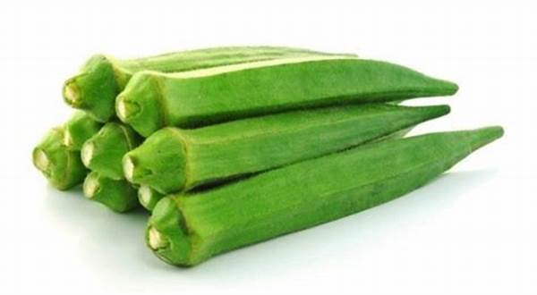

1. Seasons for Growing Ladyfinger (Okra)

Ladyfinger, also known as Okra, is a warm-season vegetable. It thrives best in tropical and subtropical climates. The optimal growing seasons for ladyfinger are:
- Spring: Ladyfinger is typically sown during early spring to take advantage of warmer temperatures.
- Summer: It can also be planted during the summer months for continuous growth in warmer climates.
- Monsoon: In regions with good rainfall, okra can be sown at the onset of the monsoon season.